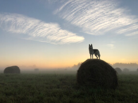
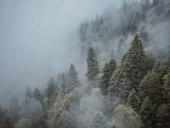
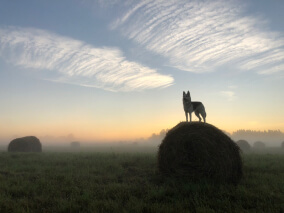
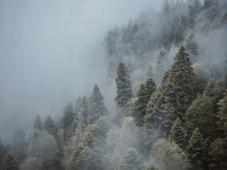
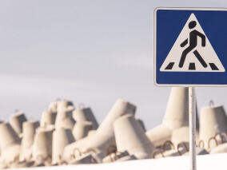
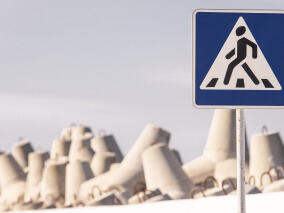

Путешествия по России
Настоящая страна не в выпусках новостей, а здесь.

ваша полка — верхняя
Чего мы там не видели?
По опросам ВЦИОМ, 95% россиян мечтают куда-нибудь поехать, но только 36% планируют провести отпуск в родной стране. Мол, чего мы тут, дома, не видели? На самом деле, Россия — это целая вселенная с ласковым
морем юга, густыми лесами Саян и суровыми льдами плато Путорана. А ещё увидеть все эти красоты можно без миллионов на счету, загранпаспорта и многочасовых перелетов. Как, например, Вера Башмакова —
смелая молодая мама, которая взяла в охапку троих детей, усадила их в свою «Ладу» и проехала 20 тысяч километров по родной стране. Мы выбрали и описали некоторые интересные места,
достойные вашего отпуска.
- Часовых поясов 11
-
Объектов природного наследия ЮНЕСКО 12
-
Объектов культурного наследия ЮНЕСКО 16
- Природных заповедников 105
- Аэропортов 241
-
Куршская коса

Здесь, посреди лесов и песчаных дюн, вы сможете
увидеть два водных горизонта — спокойного Куршского
залива с одной стороны и подёрнутого рябью волн
Балтийского моря с другой. Уникальная природная зона
на краю российского анклава.
На этом Калининградская область не заканчивается. Для
путешественника и исследователя там же по соседству — самая
западная точка России, Балтийская коса, — и немецкое наследие
россыпи небольших приморских городов. Атмосфера здешних мест
исключает суету, окуная в спокойствие природы и запах
стального, прохладного моря.
-
Кольский

Почти весь полуостров находится за Полярным кругом.
Саамская тундра, от которой на юг —
тайга, а на север — Ледовитый океан,
прикидывающийся Баренцевым морем.
Возможно, вы смотрели Звягинцева и даже слышали
историю арктического фестиваля в Териберке. Возможно,
слово «Хибины» не осталось под снегом
школьных воспоминаний об уроках географии. Возможно,
вы не интересовались пронизывающей земную кору
сверхглубокой скважиной, а от апатитов вас давно
накрывает апатия. Но ваша мечта увидеть северное сияние
начинает сбываться с билетом в Мурманск.
-
Алтай

Алтай — одно из красивейших мест
в России. В первую очередь из-за гор: если ехать
вдоль хребта, вы увидите склоны, усыпанные соснами,
горные реки и озёра. А если вы откроете
в автомобиле окна, сможете познакомиться с невидимым
чудом здешних мест — горным воздухом.
Климат на Алтае умеренный, поэтому ехать сюда лучше всего
летом. Так вы увидите всё разнообразие местной флоры
и фауны. По лесам Алтая бродят лоси, над хребтами
летают орлы, а на равнинах пасутся косули.
И знаменитые манулы — тоже обитатели
Алтайского края.
-
Зимний Байкал

Всем известен Байкал как крупнейшее озеро в мире. Многие
также знают, что это самый большой источник пресной воды
и одно из красивейших мест в России.
Конечно, это всё так. Но Байкал ещё идеальное место для
соревнований по скийорингу. Это такой вид спорта, когда
лыжник привязывает себя к мотоциклу, и тандем
старается развить как можно бóльшую скорость
на льду. В марте 2019 года на фестивале
«Байкальская миля» был поставлен мировой
рекорд — 197.011 км/ч.
-
Карелия

Сибирь заканчивается не на Урале,
а в Карелии: образующая тайгу сибирская лиственница
не растёт западнее Водлозера. Зато здесь она вымахивает
на 30 метров — леса карельских
национальных парков из-за непроходимых болот никогда
не знали топора. Некоторым соснам уже больше чем
полтысячелетия. Прикоснитесь к живому существу, видевшему
солнце раньше, чем увидал его Иван Грозный. В девственном
лесу на сотню километров не встретишь тропы.
А на редких тропинках деревья в паре метров
от земли помечены медвежьими когтями. Чтобы все знали,
кто тут хозяин.

 





 
